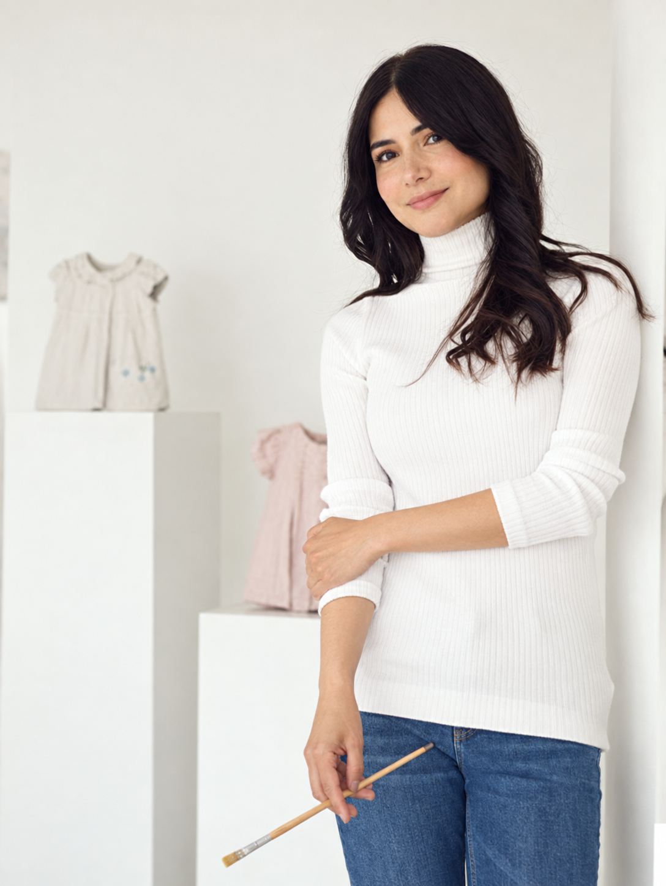

Selección
en preparación.
en preparación.
Fichas de obra por confirmar
Artista colombiana que enlaza memoria, ternura y naturaleza en escenas donde lo clásico dialoga con lo contemporáneo.

Lorena Rosas es una artista colombiana cuya pintura conecta el pasado con el presente. Entre pinceladas abstractas y figurativas, recupera la atmósfera de la Belle Époque desde una sensibilidad femenina y contemporánea.
En su obra, la infancia aparece como origen de muchos procesos emocionales y la ternura como una condición que permanece. Rosas explora el universo femenino mediante la yuxtaposición de elementos clásicos, objetos y escenas, en diálogo constante con la naturaleza y sus tensiones.
Su trayectoria ha crecido con presencia en galerías y exposiciones de Colombia, Nueva York y Tokio, con una próxima presentación en Londres. Cada pintura propone un viaje íntimo hacia la memoria, la inocencia y aquello que nunca cambia.
“Quiero reflejar todo aquello que nunca cambia”
— Lorena Rosas